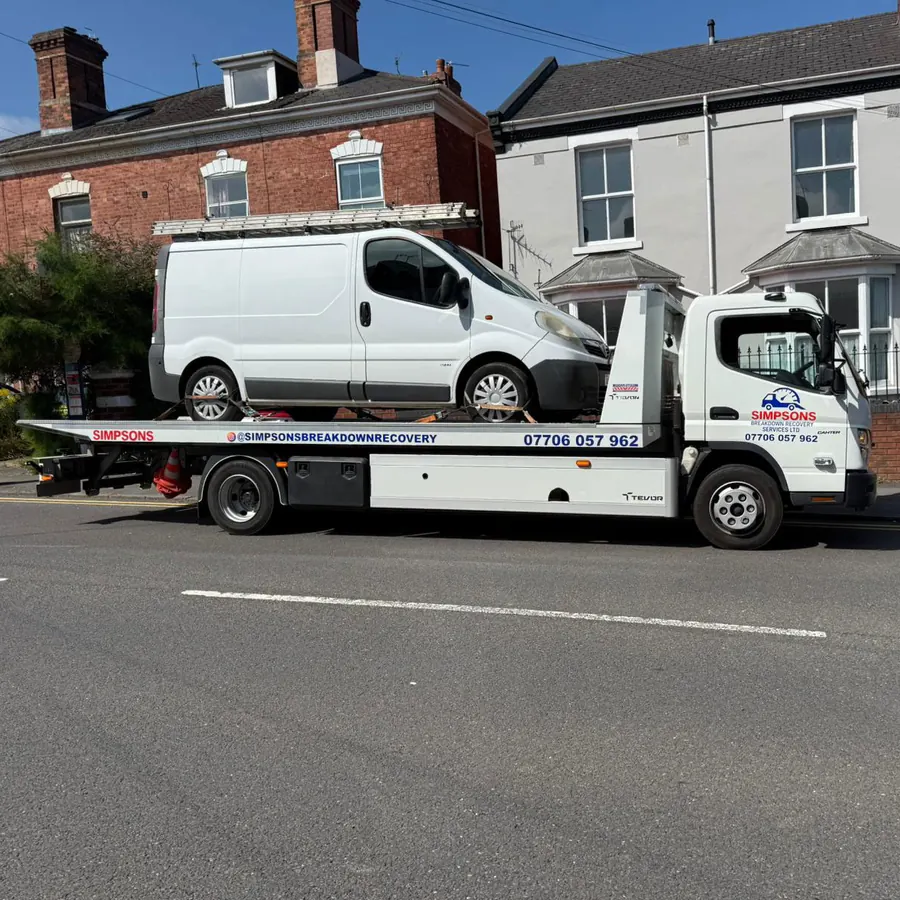
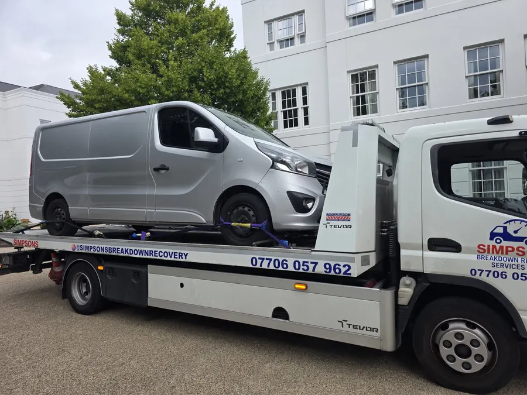
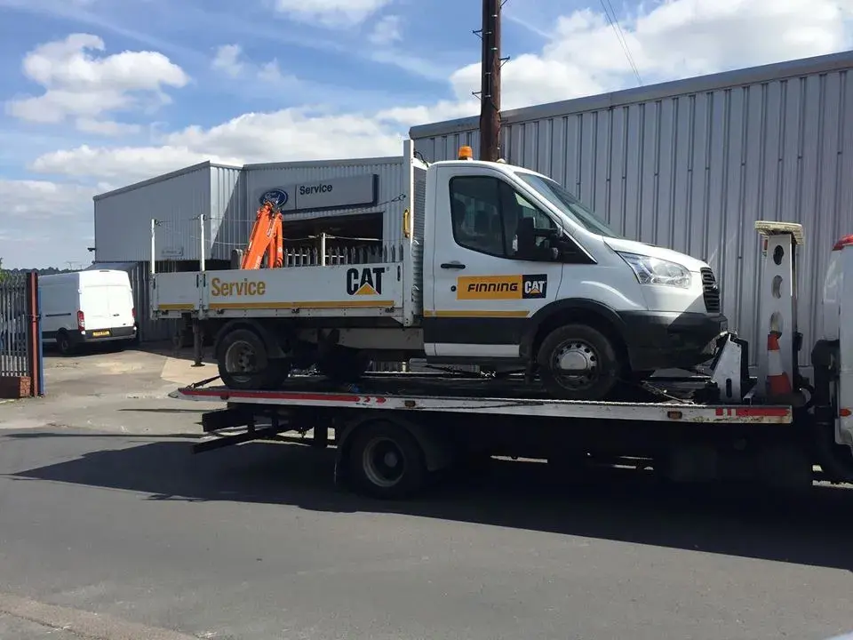
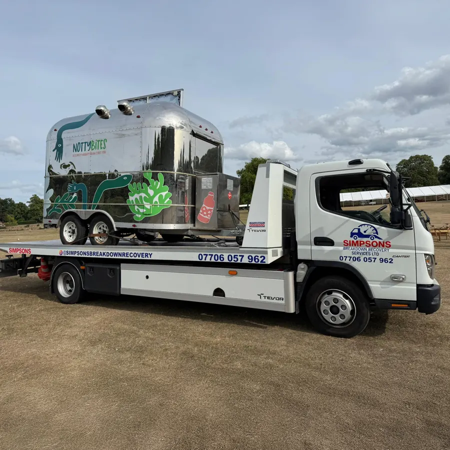
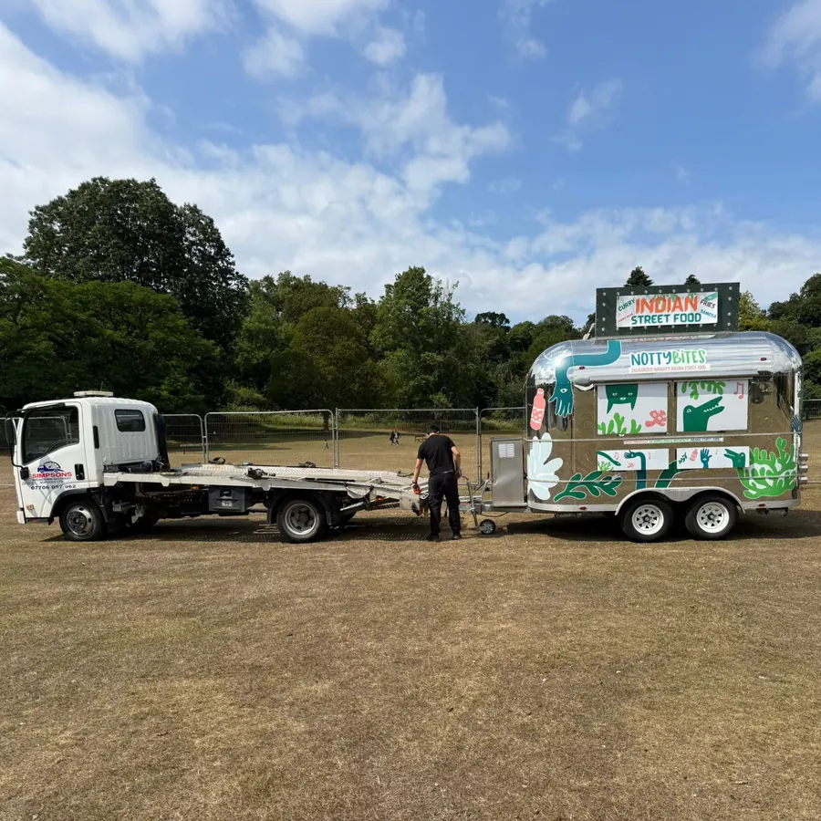
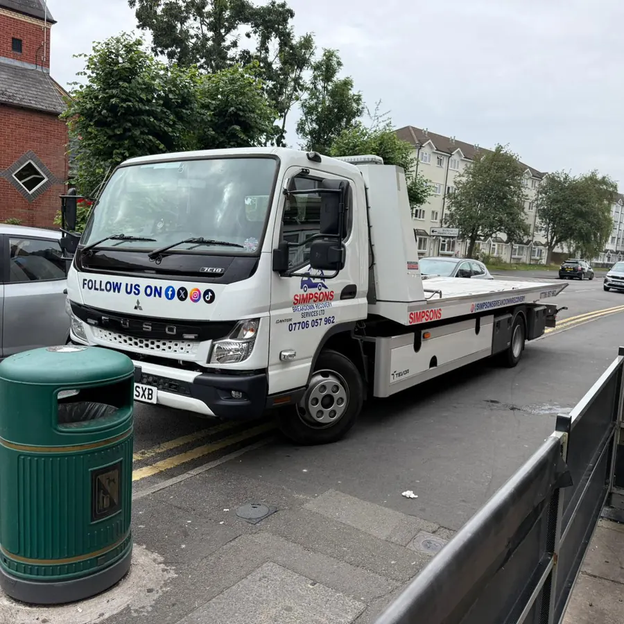

01
Car recovery Birmingham
Most requested • 24/7Engine failure, clutch gone, suspension damage or a car that simply will not start — we recover saloons, hatchbacks, SUVs and prestige models to your chosen garage or home address.
Broken down at home, on the ring road or stranded on the M6? Simpsons Breakdown Recovery Services Ltd has been recovering cars, vans and motorbikes across Birmingham since 2005. Call us and you speak to a local operator — not a call centre.
4.9 rating • 229 Google reviews Read them →Cars, vans, 4x4s, motorbikes and non-runners — including the difficult jobs other firms turn down.
Engine failure, clutch gone, suspension damage or a car that simply will not start — we recover saloons, hatchbacks, SUVs and prestige models to your chosen garage or home address.
A motorway breakdown is a live hazard. We treat hard-shoulder and emergency refuge calls as priority jobs across the Midlands network — Spaghetti Junction, M5 J1–J4, M42 J4–J7 and the A38(M).
Every hour off the road costs a tradesman money. We recover Transit, Vivaro, Sprinter, Boxer and minibus-class vehicles — loaded, with your tools and stock on board — back to your yard or base.
Flat batteries and dead starters in multi-storey and basement car parks are our speciality. Wheel skates, dollies and compact winching get the vehicle out without touching the ceiling or the paintwork.
Heavy-duty 12V and 24V boosters for a flat battery at home or at work, freeing a seized brake disc or wheel, and transporting a flat-tyre vehicle to your preferred tyre fitter.
Scene clearance after a collision, documented transport for insurance claims, moving non-runners between garages, and towing trailers or catering units to events — arranged in advance.
We run a 20-mile radius from our Edgbaston depot. Every area has its own page with local postcodes, response times and the roads we know best.
Just outside the radius? Call 07706 057962 with your location and we will tell you straight away whether we can reach you.
Every photo below is our own flatbed on a genuine job across Birmingham and the West Midlands — cars, work vans, plant service vehicles and trailers.

Van recoveryA Renault Trafic with a roof rack that would not start, winched onto the flatbed and taken on to the owner’s garage without blocking the road for the neighbours.

Panel vanA silver panel van loaded and secured with wheel straps, ready to be moved across the West Midlands. Everything is checked before the truck pulls away.

CommercialA dropside service vehicle with an orange folding crane on the back — a heavy, awkward load recovered from a dealer yard and moved on for repair.

Catering trailerA catering trailer lifted and secured onto the flatbed at a showground — the same care we take with a car, because a trader’s living is inside it.

Trailer towThe NottyBites Indian street food trailer hitched and towed to its next event — planned transport rather than an emergency, booked in advance.

On callOne of the Canter flatbeds parked up between callouts — tilt-and-slide bed, lockers loaded and ready to go anywhere in the 20-mile radius.
Three examples of the awkward work we take on when someone else has already said no.
Where: Birmingham city centre basement bay.
Vehicle: Saloon, would not start, 1.9 m ceiling with tight corners.
What we did: Wheel skates and a compact winch brought it out without touching the ceiling or bodywork, then delivered it to the customer's chosen diagnostic specialist.
Where: Harborne High Street.
Vehicle: Estate car with a seized rear caliper and a flat tyre.
What we did: Freed the stuck disc at the roadside, skated the wheel onto the flatbed and dropped the car with the owner's own tyre fitter so the repair could be finished there.
Where: M6 northbound, junction 6 approaches.
Vehicle: Fully loaded commercial delivery van.
What we did: On scene quickly from the Edgbaston base, made the position safe, recovered the van with the load on board and took driver and cargo back to the company's logistics hub.
Unedited quotes from customers recovered across Birmingham. We don't cherry-pick — read the whole profile.
“Simpsons recovery responded straight away and efficiently called him with short notice and he delivered straight away coming to collect my car and take it to the garage. Very friendly and speedy service and very welcoming, will definitely recommend and use again.”
“Friendly and quick service. Had a break down, which obviously made my day bad. But the guy overturned my mood into a good one and made me forget for some time that I actually had a problem. The price was very good too, compared to others, I would even say that the price was amazing. Thank you!”
“I can't recommend this towing company highly enough. The father-and-son team who helped me yesterday were absolutely brilliant from start to finish. They were professional, punctual, and clearly took pride in their work. If you're looking for a reliable, honest, and professional towing service, this is the company to call.”
“Impeccable service from Simpsons breakdown recovery. Really tricky job getting my non starter car out of an underground garage with a low ceiling and tight corners. Both Dean and Jaden handled the task expertly and provided an excellent and freindly service. Absolutely recommend and wouldn't hesitate to use them again in the future.”
“Last minute call after I got a flat tyre and needed to get home. Extremely punctual, professional, and all round great service from Dean!!! Definitely one of the good guys. Definitely a number I'll keep saved for if I'm in need of recovery again!”
“Great service! I had a seized rear left wheel and the recovery technician came out quickly. He knew exactly what to do, freed the stuck brake disc, and got my car rolling again. He was friendly, helpful, and got me back on the road without any hassle. Really appreciate the help. Highly recommend!”
“Simpson recovery was great, really helped me get my car sorted without costing a fortune. I had an issue getting my wheel off and needed to get my car towed to a specialist. I called him and was able to quickly arrange a time that worked for me, he towed the vehicle there, waited and dropped the car back to my tyre fitter to finish the job. Really friendly, professional and knowledgeable too.”
Three steps from the phone call to your vehicle sitting outside your garage.
Ring 07706 057962 or drop a WhatsApp location pin. You speak to Dean or an operator on the road — nobody reads from a script, and nobody asks you to hold.
We agree a fixed price before anything moves — no hidden mileage surcharge and no after-hours loading. You're told which truck is coming and roughly when it will reach you.
Your vehicle is winched onto the tilt-and-slide bed, strapped down and taken to the garage, tyre fitter, dealership or driveway you choose. Fully insured, goods in transit.
Simpsons Breakdown Recovery Services Ltd is a father-and-son team led by Dean and Jaden, based on Icknield Port Road in Edgbaston. We are the people who answer the phone, drive the truck and load your vehicle — there is no broker in the middle and no subcontracted driver you have never met.
That is why we can give a realistic arrival time instead of a vague "sometime today", and why we take on the awkward jobs: seized brakes, locked steering, basement car parks, plant service vehicles and catering trailers.
Our average local response is 30 to 45 minutes across central Birmingham, Edgbaston, Harborne, Smethwick and the M5 and M6 corridors. Call 07706 057962 and you speak directly to Dean or a driver on the road, who checks live traffic and gives you an exact ETA rather than an estimate.
Get well onto the hard shoulder or into an emergency refuge area, turn the wheels away from the carriageway, put your hazard lights on and leave through the passenger door so you are behind the barrier. Then call 07706 057962 or send a WhatsApp location pin so we can dispatch the nearest truck straight to you.
Yes — it is one of the jobs we are known for. We carry low-profile wheel skates, dollies and compact winching gear, so we can move a non-running vehicle out of multi-storey and basement car parks without touching the ceiling, pillars or paintwork.
We do. As well as cars and vans we move catering trailers, box trailers and commercial vehicles such as plant service trucks — see the Our Work section. These are usually planned jobs booked in advance, so give us a call with the trailer size and collection point.
No. We agree a fixed price before we set off, day or night. There is no hidden mileage loading, no after-hours premium added afterwards and no charge for the quote itself.
Anywhere you choose: your home driveway, your own local garage, a main dealership, a tyre fitter or a bodyshop. We also do long-distance vehicle transport if you need a car moved further afield.
We run a 20-mile radius from Edgbaston (B16), covering Birmingham and the West Midlands including B1–B17, B23, B24, B42, B62–B75, B90–B93, B66–B71, DY1–DY3 and WS1–WS3, plus the M5, M6 and M42. See Areas Covered for the full list — if you are just outside, call with your location and we will tell you straight away whether we can help.
For an emergency, calling is always fastest. Otherwise send your location and vehicle details and we will come back with a price and arrival time.
Fill this in and we will open WhatsApp with your details ready to send — no account, no waiting on an email.
In an emergency, please call 07706 057962 instead of using this form.